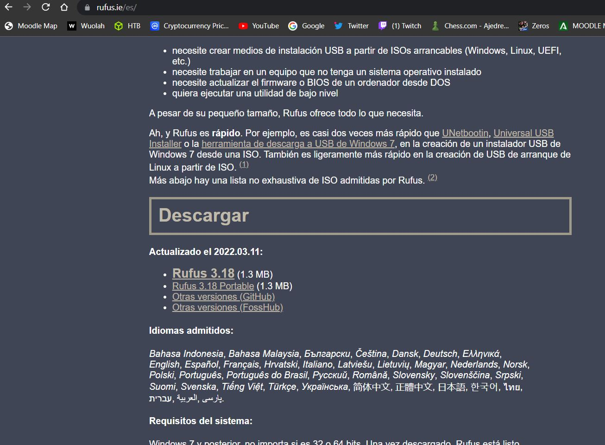
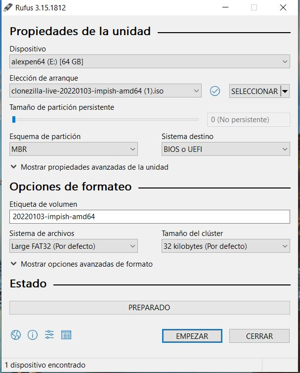
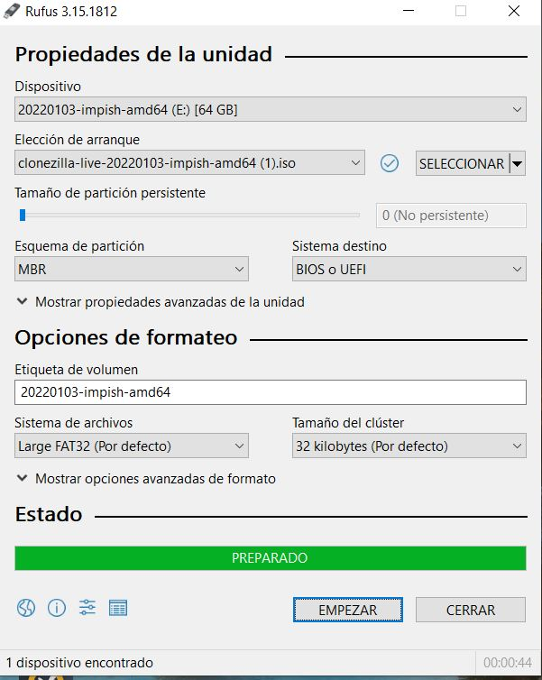

Para descargar clonezilla , tendras que hacerlos desde esta pagina , sólo con pinchar en ella te redirige directamente para su descarga.
Cuando tengamos hecho el paso anterior tendremos que bootearlo con rufus que es un programa especificamente para eso, también dejo la web pinchando en la foto.
Una vez hechas las dos cosas , solo tendremos que usar el pendrive para hacer el booteo , lo seleccionamos en el rufus y le damos a empezar.
Esta es una foto del proceso terminado , cuando acabe tendremos que apagar el ordenador e iniciar desde el pen drive. Aquí ya puedes seguir los pasos del siguiente apartado Clonezilla.